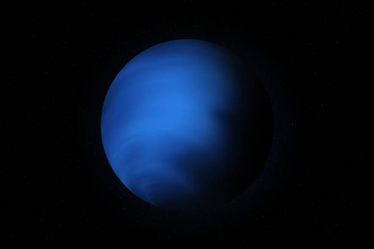

DISCOVER NEPTUNE
Step into the world of the Red Planet.
Uncover its rust, craters, polar caps, and the secrets of its ancient rivers..
Step into the world of the Red Planet.
Uncover its rust, craters, polar caps, and the secrets of its ancient rivers..

A comprehensive guide to the Red Planet. Mars has fascinated humans for thousands of years and
represents our best hope for establishing a human presence beyond Earth. With ancient
riverbeds,towering volcanoes, and potential signs of past life,
Mars continues to reveal its secrets.Neptune is the eighth and farthest known planet from the Sun. It was the first planet located through mathematical predictions rather than direct observation, making it a triumph of mathematics and astronomy.
Neptune is the fourth-largest planet in our solar system and slightly smaller than Uranus. Despite being smaller, Neptune is more massive than Uranus due to its higher density.
Neptune is more massive than Uranus despite being slightly smaller. Its gravity is about 14% stronger than Earth's. If you weigh 100 pounds on Earth, you would weigh 114 pounds on Neptune.
Neptune has the fastest winds in the solar system, reaching supersonic speeds of up to 2,100 km/h. Its vivid blue color comes from methane in its atmosphere absorbing red light.
The Great Dark Spot was a massive storm system discovered by Voyager 2 in 1989. Similar to Jupiter's Great Red Spot, it was large enough to contain Earth, but it disappeared within a few years.
Despite being the farthest planet from the Sun, Neptune is warmer than Uranus. It radiates more than twice the energy it receives from the Sun, with internal heat driving its extreme weather.
Neptune is an ice giant with a mantle of water, methane, and ammonia ices surrounding a rocky core. Like Uranus, its magnetic field is strangely tilted and doesn't pass through the planet's center.
Neptune takes 165 Earth years to complete one orbit around the Sun. Since its discovery in 1846, it has completed only one full orbit in 2011. A day on Neptune lasts just over 16 hours.
Neptune has 16 known moons. Triton is the largest and most fascinating, orbiting backwards and shooting nitrogen geysers into space. Scientists believe Triton was captured from the Kuiper Belt. Neptune has 5 main rings and several fainter dust bands.
Only Voyager 2 has visited Neptune, in 1989. It discovered 6 moons, confirmed the ring system, and revealed the Great Dark Spot. NASA is considering the Neptune Odyssey mission for future exploration.